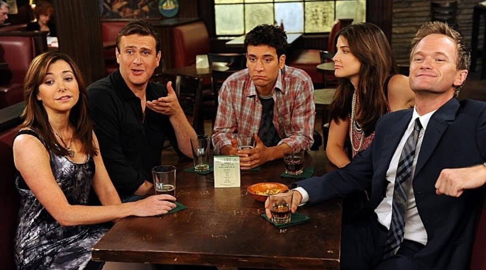

Sobre
Barney Stinson é um homem cujo o unico objetivo é viver de maneira "Lendária". É autor de 3 livros, gosta de magia e de numeros musicais.

Traços de Personalidade
- Engraçado
- Infantil
- Mulherengo
- Inteligente
- Confiante
Amigos
Desde o inico ao fim da série, Barney manteve sempre o mesmo grupo fiel de amigos, entre eles...